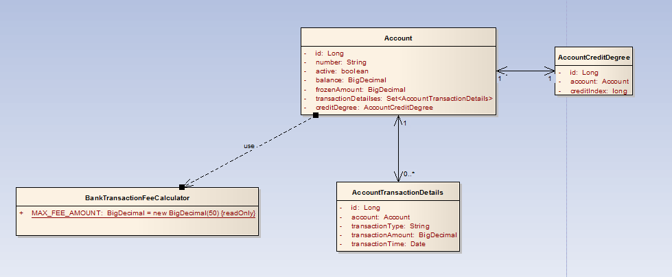
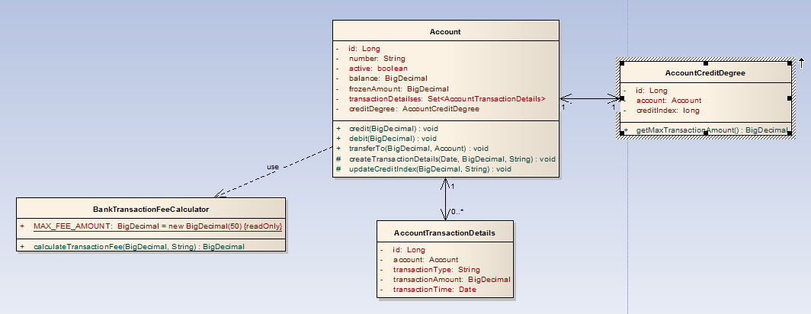

曾经参与过系统维护或是在现有系统中进行迭代开发的软件工程师们，你们是否有过这样的痛苦经历：当需要修改一个 Bug 的时候，面对一个类中成百上千行的代码，没有注释，千奇百怪的方法和变量名字，层层嵌套的方法调用，混乱不堪的结构，不要说准确找到 Bug 所在的位置，就是要清晰知道一段代码究竟是做了什么也非常困难，最终，改对了一个 Bug，却多冒出 N 个新 Bug；同样的情况，当你拿到一份新的需求，需要在现有系统中添加功能的时候，面对一行行完全过程式的代码，需要使用一个功能时，不知道是应该自己编写，还是应该寻找是否已经存在的方法，编写一个非常简单的新、删、改功能，却要费尽九牛二虎之力，最终发现，系统存在着太多的重复逻辑，阅读、测试、修改非常困难。在经历了这些痛苦之后，你们是否会不约而同的发出一个感慨：与其进行系统维护和迭代开发，还不如重新设计开发一个新的系统来得痛快？
面对这一系列让软件嵌入无底泥潭的问题，基于面向对象思想的领域驱动设计方法是一个很好的解决方法。从事过系统设计的富有经验的设计师们，对职责单一原则、信息专家、充血/贫血模型、模型驱动设计这些名词或概念应该不会感到陌生。面向对象的设计大师 Martin Fowler 不止一次的在他的 Blog 和著作《企业应用架构模式》中倡导过上述概论在设计中的巨大威力，而另外一位领域模型的出色专家 Eric Evans 的著作《领域驱动设计》也为我们提供了不少宝贵的经验和方法。
笔者从事系统设计多年，将会在本系列文章中把本人对领域驱动设计的理解，结合工作过程中积累的实际项目经验进行浅析，希望与大家交流学习。
在本系列博文的开篇中，我将会拿出一个显示的例子，先用传统的面向过程方式，使用贫血模型进行设计，然后再逐步加入需求变更，让读者发现，随着系统的不断变更，基于贫血模型的设计将会让系统慢慢陷入泥潭，越来越难于维护，然后再用基于面向对象的领域驱动设计重新上述过程，通过对比展示领域驱动设计对于复杂的业务系统的威力。
假设现在有一个银行支付系统项目，其中的一个重要的业务用例是账户转账业务。系统使用迭代的方式进行开发，在 1.0 版本中，该用例的功能需求非常简单，事件流描述如下：
主事件流：
1）用户登录银行的在线支付系统
2）选择用户在该银行注册的网上银行账户
3）选择需要转账的目标账户，输入转账金额，申请转账
4）银行系统检查转出账户的金额是否足够
5）从转出账户中扣除转出金额（debit），更新转出账户的余额
6）把转出金额加入到转入账户中（credit），更新转入账户的余额
备选事件流：
设计方案如下（忽略展示层部分）：
1）设计一个账户交易服务接口 AccountingService，设计一个服务方法 transfer()，并提供一个具体实现类 AccountingServiceImpl，所有账户交易业务的业务逻辑都置于该服务类中。
2）提供一个 AccountInfo 和一个 Account，前者是一个用于与展示层交换账户数据的账户数据传输对象，后者是一个账户实体（相当于一个 EntityBean），这两个对象都是普通的 JavaBean，具有相关属性和简单的 get/set 方法。
下面是 AccountingServiceImpl.transfer() 方法的实现逻辑（伪代码）：
1 2 3 4 5 6 7 8 9 10 11 12 13 14 15 16 17 18 19 20 21 22 23 24 25 26 27 | public class AccountingServiceImpl implements AccountingService { public void transfer(Long srcAccountId, Long destAccountId, BigDecimal amount) throws AccountingServiceException { Account srcAccount = accountRepository.getAccount(srcAccountId); Account destAccount = accountRepository.getAccount(destAccountId); if(srcAccount.getBalance().compareTo(amount) < 0) throw new AccountingServiceException(AccountingService.BALANCE_IS_NOT_ENOUGH); srcAccount.setBalance(srcAccount.getBalance().sbustract(amount)); destAccount.setBalance(destAccount.getBalance().add(amount)); }}public class Account implements DomainObject { private Long id; private Bigdecimal balance; /** * getter/setter */} |
可以看到，由于 1.0 版本的功能需求非常简单，按面向过程的设计方式，把所有业务代码置于AccountingServiceImpl 中完全没有问题。
这时候，新需求来了，在 1.0.1 版本中，需要为账户转账业务增加如下功能，在转账时，首先需要判断账户是否可用，然后，账户的余额还要分成两部分：冻结部分和活跃部分，处于冻结部分的金额不能用于任何交易业务，我们来看看变更后的代码：
1 2 3 4 5 6 7 8 9 10 11 12 13 14 15 16 17 18 19 20 21 22 23 24 25 26 27 28 29 30 31 32 33 34 | public class AccountingServiceImpl implements AccountingService { public void transfer(Long srcAccountId,Long destAccountId,BigDecimal amount) throws AccountingServiceException { Account srcAccount = accountRepository.getAccount(srcAccountId); Account destAccount = accountRepository.getAccount(destAccountId); if(!srcAccount.isActive() || !destAccount.isActive()) throw new AccountingServiceException(AccountingService.ACCOUNT_IS_NOT_AVAILABLE); BigDecimal availableAmount = srcAccount.getBalance().substract(srcAccount.getFrozenAmount()); if(availableAmount.compareTo(amount) < 0) throw new AccountingServiceException(AccountingService.BALANCE_IS_NOT_ENOUGH); srcAccount.setBalance(srcAccount.getBalance().sbustract(amount)); destAccount.setBalance(destAccount.getBalance().add(amount)); }}public class Account implements DomainObject { private Long id; private BigDecimal balance; private BigDecimal frozenAmount; /** * getter/setter */} |
可以看到，情况变得稍微复杂了，这时候，1.0.2 的需求又来了，需要在每次交易成功后，创建一个交易明细账，于是，我们又必须在 transfer() 方面里面增加创建并持久化交易明细账的业务逻辑：
1 2 | AccountTransactionDetails details= new AccountTransactionDetails(…);accountRepository.save(details); |
业务需求不断复杂化：账户每笔转账的最大额度需要由其信用指数确定、需要根据银行的手续费策略计算并扣除一定的手续费用……，随着业务的复杂化，transfer()方法的逻辑变得越来越复杂，逐渐形成了上文所述的成百上千行代码。有经验的程序员可能会做出类此“方法抽取”的重构，把转账业务按逻辑划分成若干块：判断余额是否足够、判断账户的信用指数以确定每笔最大转账金额、根据银行的手续费策略计算手续费、记录交易明细账……，从而使代码更加结构化。这是一个好的开始，但还是显然不足。
假设某一天，系统需求增加一个新的模块，为系统增加一个网上商城，让银行用户可以进行在线购物，而在线购物也存在着很多与账户贷记借记业务相同或相似的业务逻辑：判断余额是否足够、对账户进行借贷操作（credit/debit）以改变余额、收取手续费用、产生交易明细账……
面对这种情况，有两种解决办法：
1）把 AccountingServiceImpl 中的相同逻辑拷贝到 OnlineShoppingServiceImplementation 中
2）让 OnlineShoppingServiceImpl 调用 AccountingServiceImpl 的相同服务
显然，第二种方法比第一种方法更好，结构更清晰，维护更容易。但问题在于，这样就会形成网上商城服务模块与账户收支服务模块的不必要的依赖关系，系统的耦合度高了，如果系统为了更灵活的伸缩性，让每个大业务模块独立进行部署，还需要因为两者的依赖关系建立分布式调用，这无疑增加了设计、开发和运维的成本。
有经验的设计人员可能会发现第三种解决办法：把相同的业务逻辑抽取成一个新的服务，作为公共服务同时供上述两个业务模块使用。这只是笔者将会马上讨论的方案——使用领域驱动设计。

Account
账户，是整个系统的最核心的业务对象，它包括以下属性：对象标识、账户号、是否有效标识、余额、冻结金额、账户交易明细集合、账户信用等级。
AccountTransactionDetails
账户交易明细，它从属于账户，每个账户有多个交易明细，它包括以下属性：对象标识、所属账户、交易类型、交易发生金额、交易发生时间。
AccountCreditDegree
账户信用等级，它用于限制账户的每笔交易发生金额，包含以下属性：对象标识、对应账户、信用指数。
BankTransactionFeeCalculator
银行交易手续费用计算器，它包含一个常量：每笔交易的手续费上限。
我们知道，领域对象除了具有自身的属性和状态之外，它的一个很重要的标志是，它具有属于自己职责范围之内的行为，这些行为封装了其领域内的领域业务逻辑。于是，我们进行进一步的建模，根据业务需求为领域对象设计业务方法：

根据职责单一的原则，我们把功能需求中描述的功能合理的分配到不同的领域对象中：
Account
credit
向银行账户存入金额，贷记
debit
从银行账户划出金额，借记
transferTo
把固定金额转入指定账户
createTransactionDetails
创建交易明细账
updateCreditIndex
更新账户的信用指数
（我们可以看到，后两个业务方法被声明为 protected，具体原因见后述）
AccountCreditDegree
getMaxTransactionAmount
获取所属账户的每笔交易最大金额
BankTransactionFeeCalculator
calculateTransactionFee
根据交易信息计算该笔交易的手续费
经过这样的设计，前例中所有放置在服务对象的业务逻辑被分别划入不同的负责相关职责的领域对象当中，下面的时序图描述了AccountingServiceImpl的转账业务的实现逻辑（为了简化逻辑，我们忽略掉事物、持久化等逻辑）：
再看看 AccountingServiceImpl.transfer() 的实现逻辑：
1 2 3 4 5 6 7 8 9 10 11 | public class AccountingServiceImpl implements AccountingService { public void transfer(Long srcAccountId, Long destAccountId, BigDecimal amount) throws AccountDomainException { Account srcAccount = accountRepository.getAccount(srcAccountId); Account destAccount = accountRepository.getAccount(destAccountId); srcAccount.transferTo(destAccount, amount); }} |
我们可以看到，上例那些复杂的业务逻辑：判断余额是否足够、判断账户是否可用、改变账户余额、计算手续费、判断交易额度、产生交易明细账……，都不再存在于 AccountingServiceImplementation 的 transfer 方法中，它们被委派给负责这些业务的领域对象的业务方法中去，现在应该猜到为什么 Account 中有两个方法被声明为 protected 了吧，因为他们是在 debit 和 credit 方法被调用时，由这两个方法调用的，对于 AccountingServiceImpl 来说，由于产生交易明细（createTransactionDetails）和更新账户信用指数（updateCreditIndex）都不属于其职责范围，它不需要也无权使用这些逻辑。
我们可以看到，使用领域驱动设计至少会带来下述优点：
业务逻辑被合理的分散到不同的领域对象中，代码结构更加清晰，可读性，可维护性更高；
对象职责更加单一，内聚度更高；
复杂的业务模型可以通过领域建模（UML 是一种主要方式）清晰的表达，开发人员甚至可以在不读源码的情况下就能了解业务和系统结构，这有利于对现存的系统进行维护和迭代开发；
再看看如果这时需要加入网上商城的一个新的模块，开发人员需要怎么去做，还记得上面提过的第三种方案吗？就是把账户贷记和借记的相关业务抽取到成一个公共服务，同时供银行在线支付系统和网上商城系统服务，其实这个公共的服务，本质上就是这些具有领域逻辑的领域对象：Account、AccountCreditDegree、……，由此我们又可以发现领域驱动设计的一大优点：
参考链接：